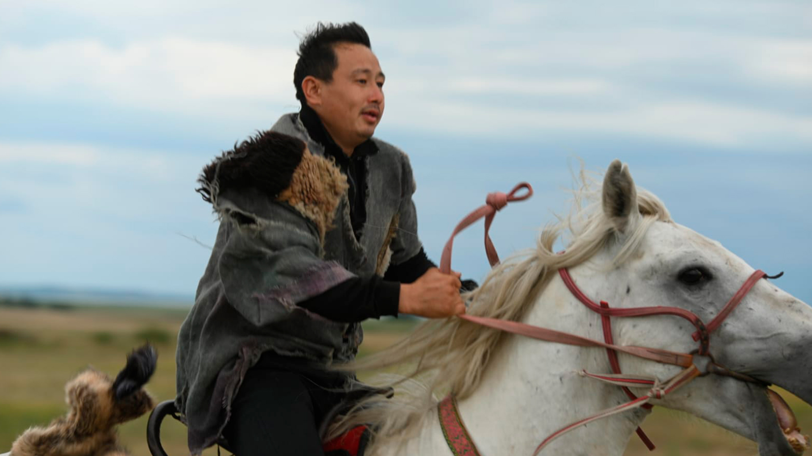
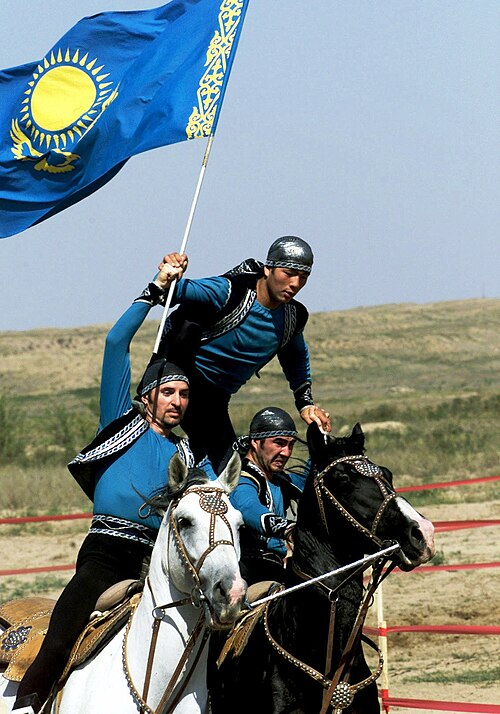

Introduction to Kazakh Horses
Kazakh horses are known for their endurance and strength, playing a vital role in the nomadic lifestyle of the Kazakh people.
- Originated in Central Asia
- Used for transportation and herding
- Adapted to harsh climates
Significance of Horses in Kazakh Culture
Horses are not just animals; they are a symbol of freedom and pride for the Kazakh people.
- Traditional horse games
- Horse meat as a delicacy
- Horses in folklore and stories

